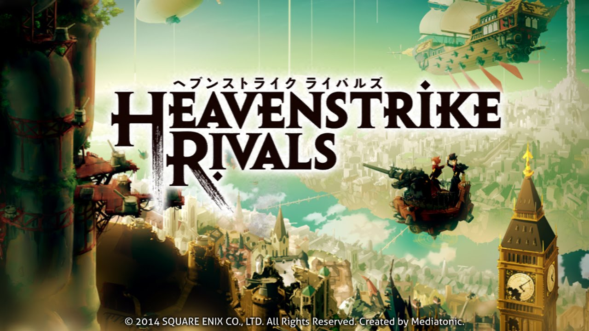
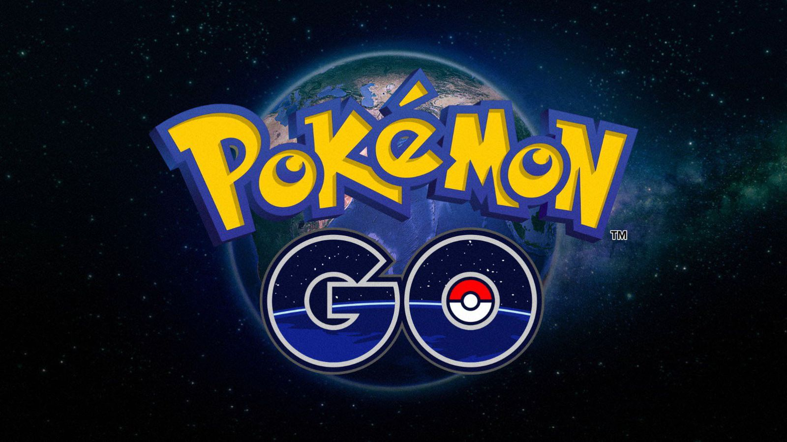
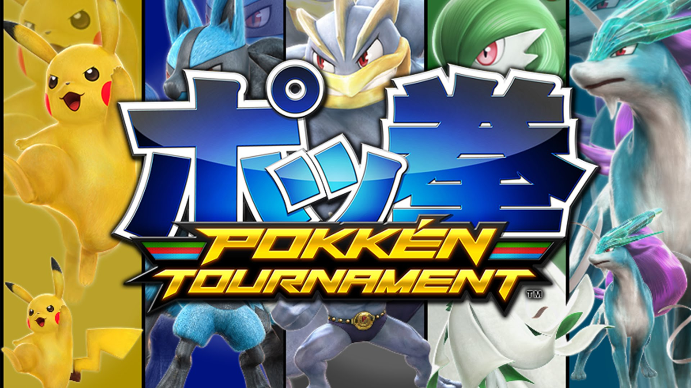
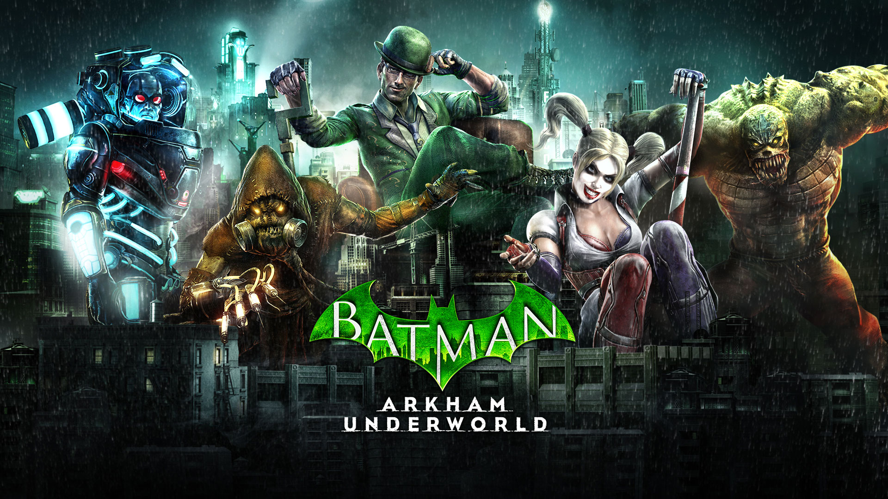
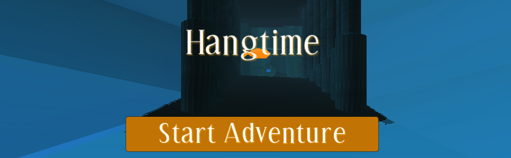
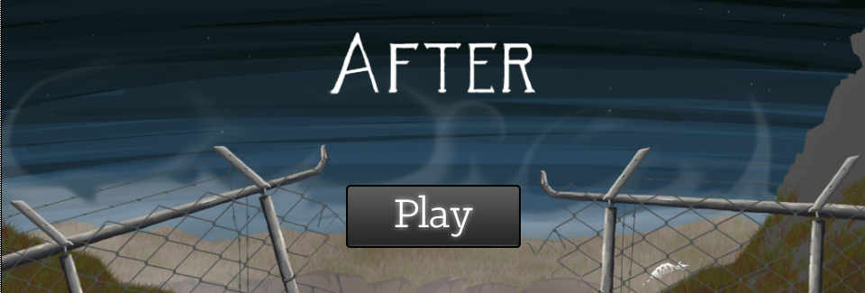
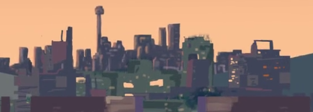
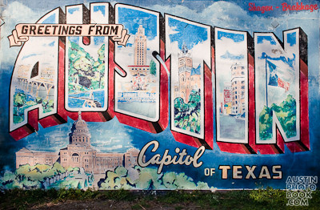

About
Rob Luckfield
Game Developer
Hello! My name is Rob Luckfield and I am a game developer currently based in Austin, Texas. I am interested in developing games for PC, console, mobile devices, and more.
Most recently, I managed QA responsibilities for CloudyShark Studios, working with a small team of artists and developers to publish a hybrid RPG & Slots game for the iOS platform.
I have a deep appreciation for learning new skills and understanding the development cycle as a whole. I previously completed a 3-month Backend Web Development bootcamp at the Iron Yard Austin. I have also worked as a QA Tester for Pole To Win International, testing both hardward and software for mobile and console games.
I am passionate about interdisciplinary collaboration, and how disparate elements come together to create a wholistic gaming experience. As such, I have contributed on projects in multiple areas of development, including 3D environment design, data management, automated testing, game audio, particle effects, and lighting.
If you would like to chat about any technologies relating to development in gaming, web, or software in general, please feel free to contact me below.
Games
QA Testing - Pole to Win International

Heavenstrike Rivals
Mediatonic Games & Square Enix - Turn-based PvP mobile strategy game

Pokemon GO
Niantic - Augmented reality (AR) mobile game in Nintendo's Pokemon franchise

Pokken Tournament
The Pokemon Company & Bandai Namco - Fighting game for the Wii U that combines the Pokemon IP with Tekken gameplay

Batman: Arkham Underworld
Warner Bros. Interactive - Clash-of-Clans style mobile game featuring Batman and his rogues gallery of villians
Student Projects

Hangtime
Project Movement - 3D platformer with rope-swing mechanics and procedural sound design.
For the entirety of the May 2015 semester at the University of Texas, I worked with a team of four other students to develop a 3D game in Unity.
Taking on the Lead Design role, I led the team through agile development, daily scrum and weekly sprints.
Each week, the team would collectively review the previous sprint and plan milestones for the sprint ahead.
The two links will connect you to a download for the game, as well as the trailer for the game.
In addition to designing the project, I filled the role of Audio Engineer, utilizing Wwise and C# scripting for procedural audio design.
Also serving as Audio Designer and Composer, I designed the project with an emphasis on progress-tracking audio design.
This feature allows the music to adapt to the player's location, musically developing as the player proceeds through each level.
I also created the majority of 3D assets featured throughout the game, using Maya 3D modeling software.
The links above connect to a download for the game (as Wwise prevents browser-based web play), and a trailer created for the game.


After
Transient Games - 2D platformer with puzzle elements and an unraveling mystery.
For the entirety of the Fall 2014 semester at the University of Texas, I worked with a team of four other students to develop a 2D game in Unity.
Using agile development, daily scrum and weekly sprints, we collectively designed the game, reviewing and setting milestones for each sprint.
The two links allow you to play the game in the browser-based unity player and watch the trailer for the game.
In addition to co-designing the project, I filled the role of Audio Engineer, creating C# scripts for audio playback.
I also served as Audio Designer and Composer, synthesizing and composing music and sound effects across the entire project.
The links above connect to the in-browser Unity player, to play the game, and a trailer created for the game.
Web Projects

SoundHouse is a procedurally-generated collaborative ambient music app.
Upon visiting the webpage, visitors are greeted by a uniquely-generated piece of ambient piano music.
After creating an account and/or logging in, users may choose preferences to shape the sounds of their ambient sessions.
If more than one user logs in, the users will both provide their sound preferences to the session.
The music also changes keys procedurally, as to keep the music from stagnating.
The app is built primarily with Ruby on Rails, streaming audio files from an Amazon S3 bucket via JavaScript and CoffeeScript.
By using a Redis server with Action Cable, I created job to fetch new audio files as users join the session.
Similarly, a second job fetches new audio files as the key changes over time.
I designed and created this application as my final project at the Iron Yard.

TeamShare is a team-based file-sharing app, created by a team of four backend Iron Yard students.
We created the app as part of a week-long exercise in working directly with a client business.
This app allows the client's users to upload and view text and image files.
Users can then grant read-and-write and read-only permissions, based on the file's creator and user's admin status.
Additionally, the app features keyword searching, team creation, team-based permissions, recursion, and Cucumber testing.

The Weirdest Places in Austin a website dedicated to ranking the best weird places in Austin, ranked by user voting.
Over the course of a weekend, a small group of front-end students and I collaborated in creating this website during our enrollment at The Iron Yard.
During this project we practiced agile methodoligies, such as daily scrum, and managed sprints via Trello, complete with task-based time estimations.
As the sole backend engineer of the project, I provided the front-end with JSON data for each location and user.
On the backend, I also created a system for users to place upvotes on their favorite places, allowing each place to be ranked.
Because the webpage is not currently live, the link connects to my github repo for the project.